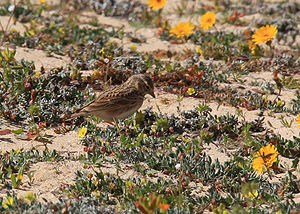
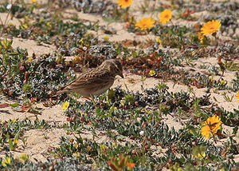

| Lesser Short-toed Lark | |
|---|---|
|  | |
| On Fuerteventura, Canary Islands, Spain | |
| Conservation status | |
| Binomial name | |
| Calandrella rufescens (Vieillot, 1820) |
| Lesser Short-toed Lark | |
|---|---|
|  | |
| On Fuerteventura, Canary Islands, Spain | |
| Conservation status | |
| Binomial name | |
| Calandrella rufescens (Vieillot, 1820) |
The Lesser Short-toed Lark (Calandrella rufescens) is a small passerine bird. It breeds in Spain, north Africa, and from Turkey eastwards across the semi-deserts of central Asia to Mongolia and China.
Many populations, including the Spanish and African breeders, are sedentary, but some Asian birds from the north of the breeding range migrate south in winter. This species is a very rare wanderer to northern and western Europe.
This is a bird of dry open country, preferring even drier and barer soils than Greater Short-toed Lark. It nests on the ground, laying two to three eggs. Its food is seeds and insects, the latter especially in the breeding season.
This is a small pale lark, smaller even than Greater Short-toed Lark. It is dark-streaked greyish-brown above, and white below. It has a pale supercilium, and a short stubby bill.
Care must be taken to distinguish this species from other similar Calandrella larks, such as the Greater Short-toed Lark, Calandrella brachydactyla. This species lacks the dark neck patches of Greater, and has fine streaking across the breast. The bill and head shape also differ. The sexes are similar.
The song is richer, more varied and imitative than that of its relative.

{kind=link}